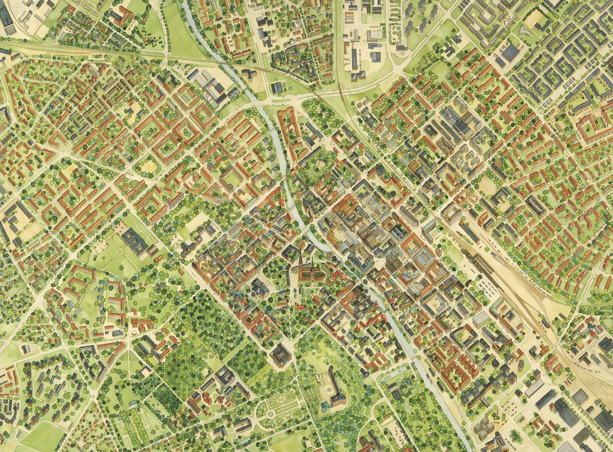
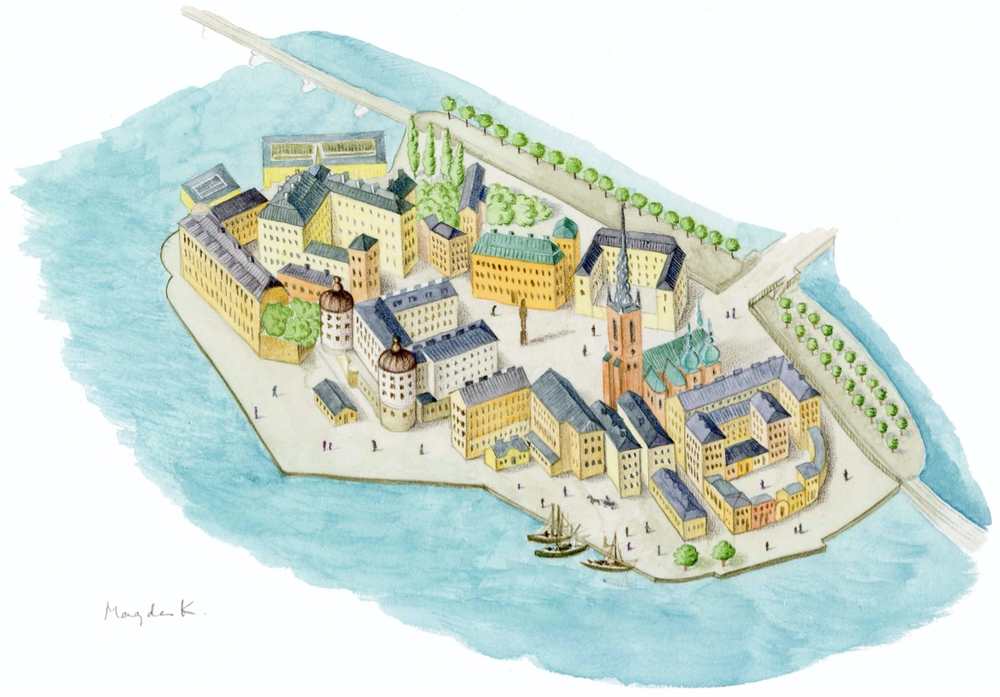
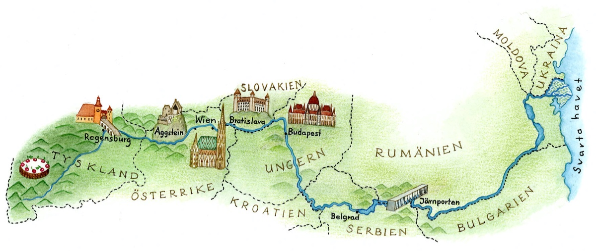
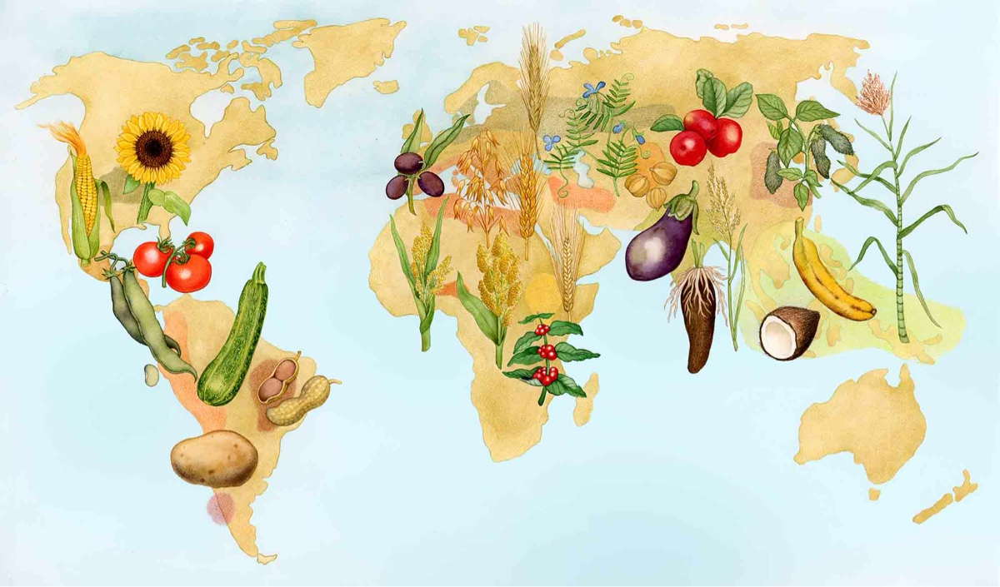
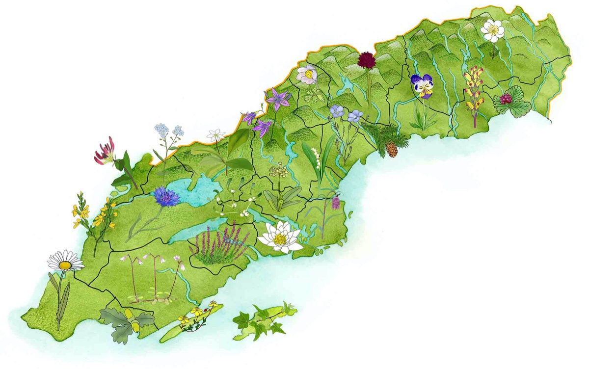
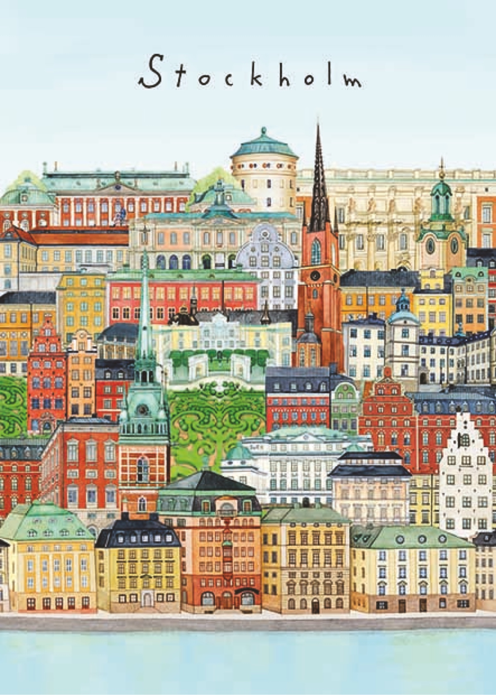

Kartor

Karta över Stockholm (detalj)

Karta över Stockholm
Karta över Uppsala (detalj)

Karta över Uppsala
Riddarholmen

Vikingarnas Sjöväg
Karta över Donau
Stjärnhimmel
Världens frukter
Sveriges landskapsblommor
Stockholm